Reconnect former athletes with their competitive past through a fast, familiar head-to-head game.
User-Centered Design · DFM · Mechanisms
Soccer Shots
A two-player spring-powered tabletop soccer game engineered for elderly couples and former athletes, taken from napkin sketches to a working all-3D-printed prototype.
Design Project · MEEN 210, Texas A&M (Group 24) · Jan–Apr 2025 · College Station, TX

2 playersHead-to-head play
All PLA3D-printed build
~$43Sourced parts budget
Any tabletopNo fixed field
01
Who it's for
The design started from the user, not the mechanism. We were designing for elderly couples, especially former athletes, so every decision traced back to their needs: reconnect them with a competitive past, keep their hands and minds active, and give them something to do together.
Improve dexterity and fine-motor control through the grip and spring resistance, and give couples a shared activity that eases loneliness.
Keep the product cheap and simple so it stays approachable and easy to set up anywhere.
02
Concept → CAD
We generated hand sketches, then grouped and scored them against our criteria to down-select a single concept. That concept became two SolidWorks assemblies: a spring-loaded launcher (the "shooter") and a goal with a pivoting goalie.
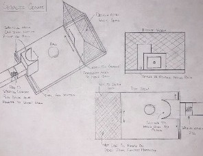
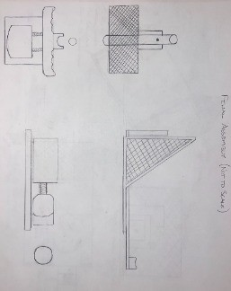
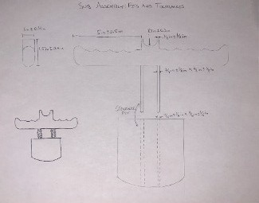
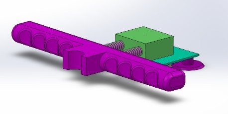
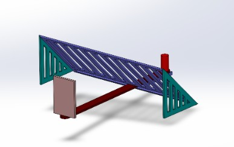
03
Design for manufacture
The build is almost entirely 3D-printed PLA, with parts spread across a Creality K1, K1 Max, and a Voron 2.4. The only sourced items were interchangeable compression springs and suction-cup feet, which kept the whole project under budget.
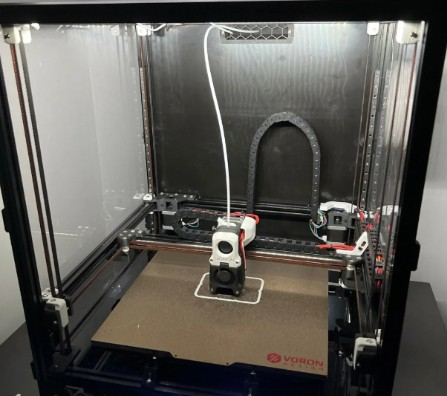
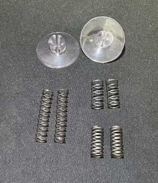
04
Tolerancing & iteration
The first prints did not fit. The guide-rod bores came out too tight, and the end caps and handle would not seat in the launcher. We sanded parts to size and enlarged the holes. Tolerancing the poles and holes in the shooting mechanism turned out to be the key to an accurate product.
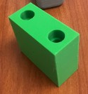
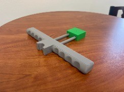
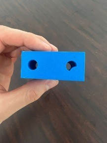
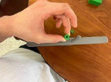
Smooth, accurate slide
Enlarging and sanding the bores gave the plunger a smooth, accurate slide on the guide rods. That is the difference between a toy that jams and one that shoots straight.
05
Finished product
The result is a working game with a smooth goalie pivot for easy blocking. We deliberately chose not to build a fixed field, so the two pieces play on any tabletop at any distance, versatile and customizable to whoever is playing.
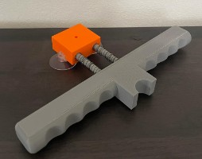